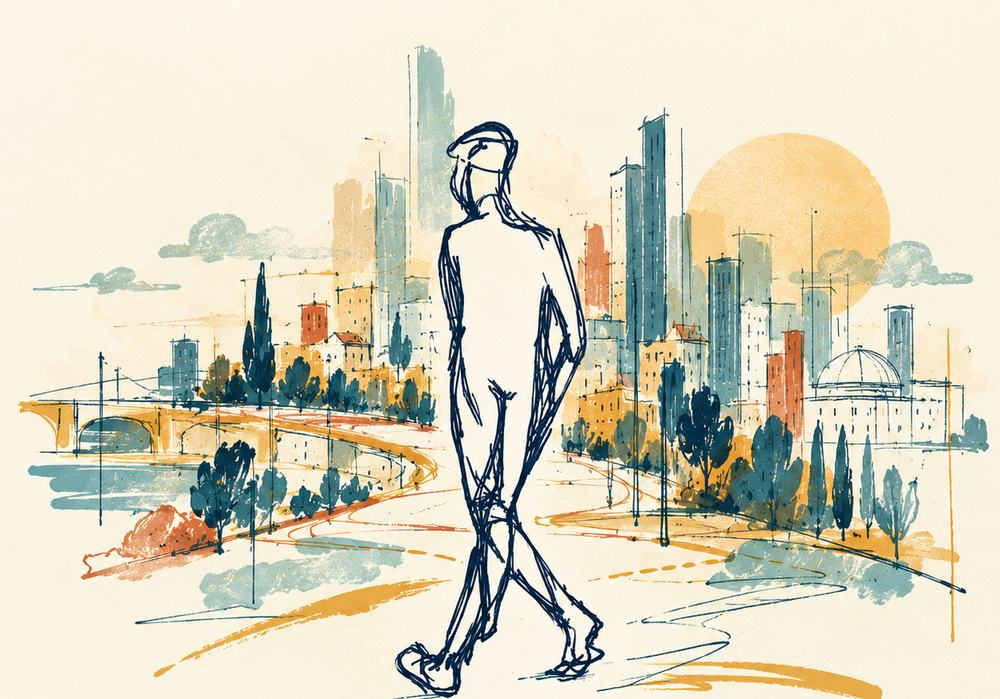

נקודת מוצא · העיר
הפלאנר
הכול התחיל בהליכה. המשוטט העירוני נע בעיר בלי יעד מוגדר: מתבונן, שם לב, הולך לאיבוד, פוגש אנשים ומקומות, ומגלה אפשרויות מתוך התנועה והקשב עצמם. הדמות הזו הייתה נקודת המוצא של הדרך כולה.
THE ECOSYSTEMIC FLÂNEUR
דרך לגלות מקומות, להקשיב לאנשים ולחשוף אפשרויות חדשות.
שיטה מקורית שפיתח תומר בן חמו, מתוך שנים של הליכה, שאלות, משחק, אירוח ומפגשים עם אנשים ומקומות, בישראל ובאירופה.
01 · מסע בין עולמות
היא צמחה לאורך שנים, מתוך סקרנות שהובילה ממקום למקום, מרעיון לרעיון ומאדם לאדם. עולמות שנראו רחוקים זה מזה נפגשו, שוחחו, נבחנו בשטח, ולאט לאט נעשו לדרך אחת להסתכל, ללמוד ולעבוד עם אנשים ומקומות.
אפשר לבחור כל נקודה ברשת, ולעקוב אחרי החוטים שמחברים אותה לאחרות.
נקודת מוצא · העיר
הכול התחיל בהליכה. המשוטט העירוני נע בעיר בלי יעד מוגדר: מתבונן, שם לב, הולך לאיבוד, פוגש אנשים ומקומות, ומגלה אפשרויות מתוך התנועה והקשב עצמם. הדמות הזו הייתה נקודת המוצא של הדרך כולה.
שורש מוקדם · 2007
בעבודת התזה שלו לתואר שני שאל תומר אם שוטטות, התבוננות ותנועה במרחב העירוני יכולות להיות דרך לייצר ידע. המושג המרכזי בה הוא "גישה מבחינה": מבט שמבחין במה שהמבט השיטתי מחמיץ. זה אחד השורשים של הדרך, לא המסגרת שלה.
משחק · מבט מבחוץ
היכולת לשאול על המוסכמות, לשבש את המבט המוכר, להכניס משחק, ולחשוף את מה שמסתתר לעין כול. ליצן החצר מסתכל על העולם מחוץ למסגרות הרגילות שלו, ומשם הוא רואה את מה שאחרים כבר הפסיקו לראות.
נקודות מבט
מפגש עם דרכי חשיבה שונות, ועם הרעיון שאפשר להחליף בכוונה את האופן שבו ניגשים לשאלה או למצב. אותה שאלה נראית אחרת מכל כובע, וגם אותו רחוב נראה אחר מכל מבט.
אירוח · יוון
אירוח של שיחות משמעותיות, חוכמה קולקטיבית, למידה משותפת ותהליכים משתתפים. ביוון הלמידה עברה גם דרך השולחן: תרגולי אירוח וארוחות משותפות, שבהם הכנסת האורחים, המפגש והחוויה המשותפת היו בעצמם דרך ללמוד.
הקשבה · גרמניה
חישה, הקשבה, נוכחות ואפשרויות שמתהוות. בגרמניה פגש תומר את הגישה הזו מקרוב: להאט, להקשיב גם למה שעוד לא נאמר, ולתת לחדש להופיע לפני שממהרים לפתור.
חלום משותף · ברלין
בברלין: חלימה משותפת, תכנון והשתתפות. איך חלום של אדם אחד נעשה חלום של קבוצה, ואיך חלום משותף הופך לפעולה בעולם.
אנשים, קהילות ומקומות · אירופה
כנס פלייסמייקינג בוולנסיה, שבו השוטטות נפגשה גם עם World Café, והשייכות לרשת הפלייסמייקינג האירופית. המפגשים והחילופים עם אנשי מקצוע מארצות שונות פתחו דרכים אחרות לחשוב על היחסים בין אנשים, קהילות ומקומות, והרחיבו גם את ההבנה וגם את העבודה עצמה.
בשטח · ישראל ואירופה
עשרות סדנאות, חקירות וניסויים בהליכה לאיבוד במרחב, בישראל ובאירופה. בתל אביב, ב־2014–2015, הן נקראו "הזמנה ללכת לאיבוד", תחת השם "המשוטט – סיורי פליאה". כאן התברר שהשיטה לא צומחת רק מקריאה ומחשבה, אלא ממפגש חוזר עם מקומות ואנשים של ממש.
מה שצמח מכל אלה
החשוב הוא לא שתומר פגש שיטות רבות. הוא חקר אותן, התנסה בהן, פירש אותן דרך העבודה שלו, ולאט לאט מצא דרך משלו לחבר ביניהן. המשוטט האקוסיסטמי אינו צירוף של שיטות קיימות. זו גישה מקורית, שממשיכה להתפתח בתוך העבודה עצמה.
מי שהלך בדרך
היוצר והמפתח של המשוטט האקוסיסטמי. אמן קהילתי, חוקר, מנחה ומעצב תהליכים משתתפים, ומייסד עושים מקום | Community Placemaking. הוא עובד בצומת שבין אמנות, קהילה, מקום וחיים עירוניים.
במקום ליצור עבור קהילה, הוא מעצב את המרחב, התהליך והמפגש שמאפשרים לקהילה עצמה להיות היוצרת.
זה גם הלב של השיטה. המשוטט לא מביא אל המקום תשובה מוכנה. הוא יוצר תנאים שבהם אפשר לראות את מה שכבר קיים, ולגלות יחד את מה שעוד יכול לצמוח.
02 · מהמסע לשיטה
לאורך השנים חזרה שוב ושוב אותה תנועה, בכל מקום ועם כל קבוצה. מתוכה התגבשו שבע תנועות. הן תנועות חיות, לא נוהל: הן משתנות בצורתן ובאורכן לפי ההקשר, ומהחגיגה חוזרים אל הערך בהבנה שהשתנתה.
אפשר ללחוץ על כל תנועה.
ערך ← שחרור ← שוטטות ← קשב ← הבחנה ← יצירה ← חגיגה
Value · Letting Go · Wandering · Attunement · Discernment · Creation · Celebration
אופן ראשון
מפגש של אדם עם מקום: לצאת, לשים לב, להבחין, ולחזור עם משהו שלא ידעתם שאתם מחפשים.
אופן שני
תהליך מונחה לקהילה, למקום, לארגון או לבית ספר. לא בהכרח הליכה, ולעיתים בכמה מפגשים, עם קציר משותף ביניהם.
אותן שבע תנועות בשני האופנים, בביטוי אחר. את האופן בוחרים בתחילת המסע. הוא לא נגזר מזהות המשתתפים ולא מגודל הקבוצה.
המנגנון שמלווה את החוויה
המנגנון האדפטיבי מרכיב מסע לפי דרגת השוטטות, האופן והמקום שתספרו עליו (אב-טיפוס עובד). לצידו המשוטט B, יציאה אחת בחמישה שלבים:
חמשת השלבים הם המבנה של יציאה אחת במנגנון, ואינם שבע התנועות. שום דבר לא נשלח: מה שכותבים נשאר בדפדפן.

בתמונת EGO האדם עומד בראש פירמידה. בתמונת ECO הוא חלק מרשת החיים: תלוי בה, ומשפיע עליה.

מכונה אפשר לרוב לפרק, לתקן ולצפות. במערכת חיה יכולות לצמוח מהקשרים בין החלקים איכויות חדשות. סינרגיה היא אפשרות, ולא הבטחה.

בהשראת המרחב הכאורדי, השוטטות היא דרך לשהות שם לזמן מה: לשחרר את השליטה, להישאר בתוך אי הוודאות בלי לקרוס, ולשים לב למה שמתחיל לצמוח.
תובנות של תומר, ולא צווים. כיוונים לקשב, לשיקול דעת ולפעולה בעולם חי ומקושר. הן מזינות את השוטטות, אבל השיטה עצמה היא שבע התנועות.
לזהות את המידה הנכונה, בלי לצבור, לצרוך או לקחת יותר ממה שצריך. לא בינוניות ולא פשרה אוטומטית, אלא שיקול דעת בכל מצב.
אף אחד לא רואה את כל התמונה. כשאנשים שונים משתפים במה שהם יודעים, יכולה לצמוח הבנה שאף אחד מהם לא היה מגיע אליה לבד.
מגוון של אנשים, מינים, נקודות מבט ודרכי ידיעה נותן למערכת חיה עושר, יכולת הסתגלות ואפשרויות.
להקשיב זה להכיר בכך שנקודת המבט שלנו חלקית. כך לומדים את מה שלא נראה מנקודת מבט אחת.
לפני שמחפשים עוד, לשים לב למה שכבר כאן ולהוקיר אותו: אנשים, קשרים, מקומות והזדמנויות.
03 · העבודה בעולם
זו לא רק פילוסופיה. המשוטט האקוסיסטמי התפתח לאורך שנים של סדנאות, הנחיה, תהליכים קהילתיים, הוראה וניסויים עם אנשים ומקומות, בישראל ובאירופה. כל מפגש כזה בחן את השיטה מחדש, ושינה אותה קצת.

נחשפים להשראה, יוצאים לשוטט, חוזרים לספר, ויוצרים. סדנאות שהתחילו בתל אביב והמשיכו לערים ולמקומות אחרים.
סדנה שקוראת מקום דרך חמש עדשות:
REFEEL · REVIEW · RESPECT · RECONNECT · RECREATE
תהליכים משתתפים עם קהילות ומקומות, במסגרת עושים מקום: להקשיב לשכונה ולתושבים, ולתת לקהילה עצמה להיות היוצרת.
בקורסים שלושת המפגשים הראשונים נפתחים במעבר מתפיסה מכניסטית לתפיסה אקוסיסטמית, ומשם יוצאים ללמוד מתוך המרחב.
"תמונה אחת שמספרת משהו עליי": צילום בדרך לארוחה, ואחריו מעגל שיתוף. כך גם צוות או כיתה מתחילים לראות את עצמם ואת המרחב כמערכת חיה.
סדנאות, כנסים ומפגשים עם אנשי מקצוע באירופה, שבהם השיטה נפגשה עם קהלים, שפות ומקומות אחרים.
ולצד העבודה בשטח, ספר על השוטטות, שנכתב בימים אלה.
04 · לאן השיטה יכולה להוביל
כל מפגש נבנה סביב המקום, האנשים והשאלה שמעסיקה אתכם. כמה כיוונים שאפשר לצאת אליהם:
יציאה מונחית למקום, לאדם אחד, לקבוצה או לצוות. בעיר, בשכונה או בטבע.
מפגש עם הרעיון: מ־EGO ל־ECO, מכונה ויצור חי, והמשוטט כדרך לקרוא מקום כמערכת חיה. גם כסדרת מפגשים.
למנחים, לאנשי חינוך ולאנשי מקצוע שרוצים להוביל שוטטות בעצמם.
תהליך בכמה מפגשים סביב המקום, הסיפור, הכוחות, האתגרים והמטרה, עם קציר משותף ביניהם.
שוטטות כדרך לראות ארגון או בית ספר כמערכת חיה: להקשיב, להעלות ידע מבוזר, וללמוד יחד מתוך המרחב.
קורסים, מחקר, פיתוח מתודולוגי ופרויקטים יישומיים עם מוסדות ושותפים מתחומים שונים.
ונבנה יחד את הדרך המתאימה. אפשר לכתוב ישירות ל־osimkehilanet@gmail.com, או לבחור נושא ולנסח פנייה בעמוד המקצועי.
05 · לעומק
המחקר, המקורות, המודלים והכלים, לכל מי שרוצה להעמיק.
שיחות עם הגות: וולטר בנימין והפלאנר, אברהם יהושע השל והפליאה, גי דבור והדריווה, מרטין בובר, מישל סר. אלה התכתבויות פילוסופיות, ולא מקורות של כלים.